在Hot Chips 2026尾声，OpenAI展示了自研推理加速器Jalapeno。多数评论只看标题，以为这是一个一夜之间取代GPU的魔法黑盒；但这篇文章指出，真正的价值在于一整套系统架构权衡与设计方法上的改进。
Jalapeno没有去追峰值「展示用」FLOPs，而是从最终用户的体验出发：用TPOT与端到端请求延迟定义SLA，在满足SLA之后再优化每瓦请求数。它在网络、投机解码、芯片架构与KV cache布局上都做了针对性取舍，本文按OpenAI的演讲材料逐层拆解。
来源：R. Ho、R. Narayanaswami、C. Leary，《You Can Just Build Things … Chips》，Hot Chips 2026。
在Hot Chips 2026大会尾声，OpenAI展示了他们的芯片架构Jalapeno。Jalapeno是一款通用AI推理加速器，主要为OpenAI自身的工作负载设计，但也能泛化到前沿模型的工作负载。
多数评论者看到这个标题，会以为OpenAI造出了一个能在一夜之间取代GPU的魔法黑盒。事实与此相去甚远：这次芯片设计里包含了一整套丰富的系统架构权衡与设计方法上的改进。
本文是一篇针对Jalapeno的进阶案例研究，基于他们的演讲材料与相关资料，覆盖整个架构，包括它的动机是什么、领导层可能权衡过哪些取舍与替代方案，以及AI在哪里创造了价值。原文目录如下：第一部分是系统规格与约束（系统级权衡的Pareto前沿、LLM请求的延迟、每请求能耗的推理效率；架构观察：理论内存roofline高于用户token吞吐、prefill/speculate/decode之间不可预测的工作负载特征、在单芯片上平衡大KV状态；影响用户体验的延迟来源：互连的SOTA拆解、操作数迟到造成的计算停顿）。第二部分是硬件架构如何协同设计以应对LLM工作负载（采用Broadcom Tomahawk 6交换机的网络架构与替代方案：两层Fat-Tree、3D/4D直连Torus/Mesh、Dragonfly；多token预测的投机解码；芯片的空间架构；芯片设计规格）。第三部分是AI如何辅助芯片设计（三种agentic编码范式、LLM到RTL的管线、LLM到高级综合的管线、Agentic Flow，以及为何先进芯片设计还没用上agentic flow、Jalapeno如何用Google XLS做高级综合、与瀑布式设计方法的对比），这部分为付费内容。第四部分是软件模型调优与性能结果（软件性能调优、前沿模型上的结果），同样为付费内容。
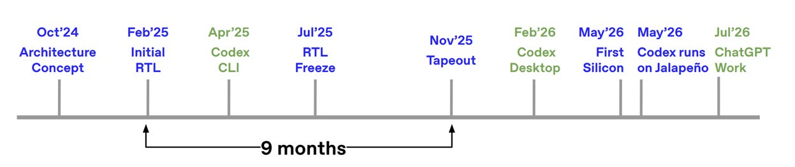
在Hot Chips上展示的所有芯片架构中，Jalapeno最集中地体现了AI加速器在系统定义与协同设计上面临的复杂权衡。它没有为峰值「展示用」FLOPs做优化，而是以端到端优化为目标，同时在前沿模型的工作负载之间保持性能均衡。
设计定制硅，本质上是在穿越一组紧密耦合的Pareto前沿。宏观层面有三层：
智能vs服务成本vs延迟。在API与模型层，采用更多参数、推理树或MoE的模型更智能，但会增加内存占用与每个token的FLOP需求。
吞吐vs交互性。在系统与推理层，prefill（计算密集）与decode（内存密集）之间存在权衡，而批大小会影响两者的平衡。
计算密度（FLOPs/mm²）vs每比特能耗vs光罩限制。在物理硅与封装层，提高片上计算密度受光罩尺寸限制，这迫使设计转向chiplet：把不同功能分离到合适的制程节点上，再用2D互连把它们连起来。
除此之外，还有若干系统级与微架构层面的重要前沿：
内存带宽vs容量vs每比特能耗。这是经典的「内存墙」权衡：片上SRAM带宽极大但面积密度很差，HBM容量巨大却受散热与边缘布线长度限制，两者必须混用。
交换radix vs覆盖距离。在scale-up互连中，高radix交换机（如Broadcom TH6）能通过减少网络跳数更好地「集中」多个GPU；但高radix的价值取决于最远那个GPU能否连到它，因此铜缆信号完整性的极限与光模块的功耗开销，往往决定了给定网络架构下能合理接入高radix交换机的GPU数量上限。
可编程性vs硅效率。一般来说，为特定任务做得越高效的硅越不通用：GPU的可编程性很高，而固定功能、效率极高的ASIC则相反。
模型精度vs计算/内存密度。多数AI加速器把精度压到FP8甚至FP4，以提高计算密度、缓解内存带宽压力，但这会缩小动态范围，并给编译器增加复杂度以确保模型精度不受影响。
归根结底：世界上最强的模型能定义「什么是可能的」，但要经济地部署它，需要有效的软硬件协同设计。
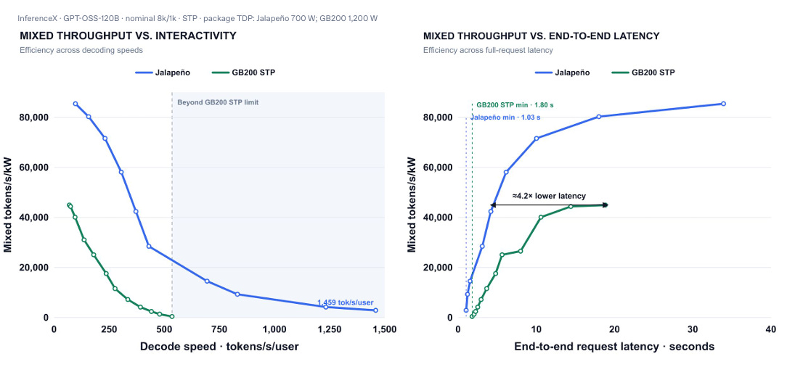
OpenAI审视了这些前沿，并收敛到其中两个最重要的：端到端请求延迟vs以每千瓦混合吞吐衡量的能效；解码速度vs以每千瓦混合吞吐衡量的能效。在本文中，作者还会涉及其他若干Pareto前沿上的设计考量。
传统半导体厂商倾向于按硬件指标来设计加速器，例如峰值理论FLOPs（也就是「展示用FLOPS」）与无约束的批吞吐。OpenAI把这个范式倒了过来，从最终用户在意的东西出发。他们观察到，用户体验主要由推理延迟决定，而延迟通常用三种方式衡量：
首token时间（TTFT）：prefill阶段的提示处理速度。
每输出token时间（TPOT）：decode阶段的token生成速度。
末token时间：整个请求的总周转时间。
从ChatGPT、实时API客户端以及内部agent工作流的终端用户需求出发，OpenAI反向推导出严格的SLA，尤其针对TPOT与端到端请求延迟，同时保持对其他前沿模型的通用性。
在集群层面，推理效率实际上给机架本身的电力系统设定了约束，因为要服务于预期使用它的全部用户。每请求能耗与批大小之间是竞争关系：
更小的批量能在快速互连上带来更低的单用户延迟，但会浪费空闲的计算逻辑，因为内存通道每生成一个token都要流式读取数十GB的权重。
更大的批量让ALU保持忙碌，从而最大化能效，但会给单个用户引入排队延迟。
这两种取舍必须被平衡，既要改善整体用户体验，又要保证经济可行性与电网使用效率。OpenAI按服务层级通过SLA定义端到端延迟目标；在满足该目标之后，再优化计算效率，也就是每瓦每秒请求数。
OpenAI对可比的GPU做了一些架构层面的观察，这些观察影响了他们的芯片与系统架构。
理论内存roofline高于用户实际token吞吐。OpenAI对理论内存roofline的计算，凸显出理论内存带宽与实际token生成速度之间的巨大鸿沟。他们算出：如果HBM吞吐是唯一的物理约束，理论上可以达到约每秒2000次完整模型权重读取；其假设是128颗芯片聚合出1 PB/s的HBM4带宽、模型是约1万亿参数的FP4前沿模型。在投机解码的帮助下，这个上限可以推到单用户每秒5000到10000个token。
但在现实中，单用户token速率徘徊在每秒20到200个之间。这是被并行带来的各种开销限制的，例如芯片间网络延迟、同步延迟与NoC路由争用。这些开销经常导致HBM在token与token之间空转、利用率不足。
为了找回集群的经济性，运营方通常会提高并发请求的批大小，以饱和可用的HBM带宽。批处理确实优化了服务器吞吐，但对单个用户的提示速度毫无帮助；而那些用户完全不知道、通常也不关心与自己同批处理的其他请求。
内存带宽还可以继续往上推，但会撞上严重的物理约束，这让SK Hynix这样的内存厂商开始研究光互连。
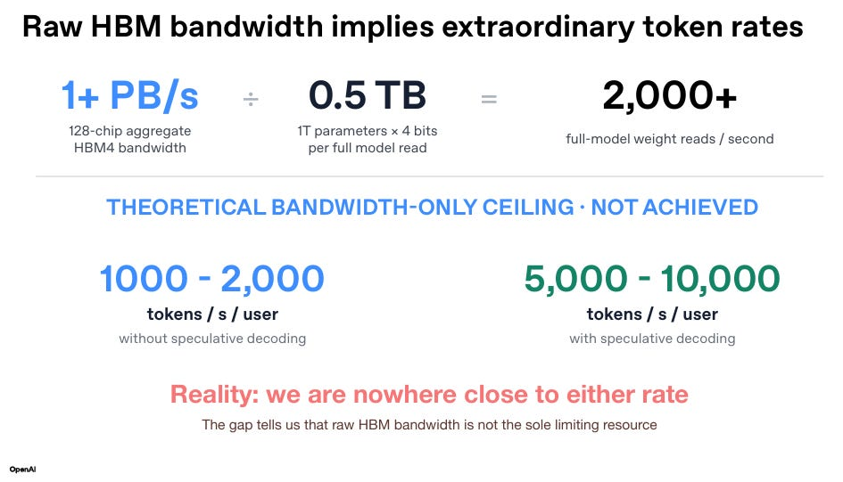
prefill、speculate、decode三者之间不可预测的工作负载特征。几乎所有AI加速器及其周边系统，都要在通用性与专用性之间权衡，才能成功应对LLM请求推理所需的、程度各异的工作负载。让加速器100% 时间满载是最理想的，但实践中很难做到。
上图给出了LLM的主要处理阶段：prefill与decode，两者之间还有一个可选的第三阶段speculate。
Prefill通过接收输入提示token来构建注意力上下文，把它们并行送过transformer模型，并填充内存中的KV cache。Prefill是计算密集的，首token时间（TTFT）在此关键；它会压榨计算资源，影响供电网络的di/dt与散热，也就是每千瓦吞吐的关键之处；把数据写入内存之前，它还会压榨本地SRAM与互连带宽。
Speculate是一个可选步骤，用一个轻量的「草稿」模型预测接下来K个token（比如5到10个）。这K次前向比较便宜，随后用一次覆盖全部候选token的验证前向来确认结果。Speculate主要用来绕过decode阶段的内存带宽墙，它可以采取单token或多token解码的形式；因为数据包跨阶段传输时通信延迟很关键，所以speculate会压榨光模块与SerDes系统。
Decode则自回归地一次生成一个token来回应请求。每生成一个输出token，模型都必须读取模型权重加上累积的KV cache来计算注意力并算出一个token。Decode基本是内存受限的操作，会给HBM带来压力，因为每一次pass都需要流式填充目标模型权重（在MoE中还要做All-to-All）。Decode可以用分组查询注意力（GQA）与投机解码等技术来优化，以绕开内存带宽瓶颈；在MoE模型里，decode还容易让工作负载变得突发。
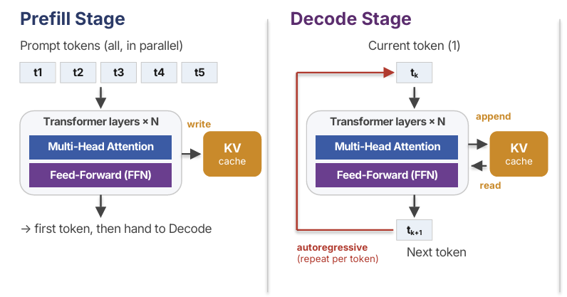
问题在于，多数工作负载的比例变化极大，要为每一个请求精确预估计算需求非常困难。你或许可以设计高度专用的芯片分别处理每一类工作负载再把它们串起来，但这可能因为加速器空闲而导致计算效率下降；同样，你也可以把三种计算都放在一颗平衡的芯片上，代价是其中一部分可能长期未被充分利用。
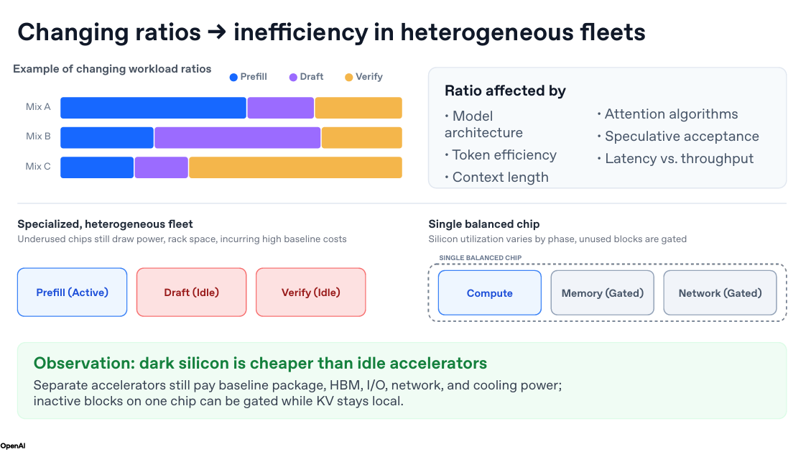
Ravi Narayanaswami观察到一个规律：未来不支持某些功能，比内置了但暂时用不上的功能更糟。他提到，机会成本高于边际成本，因为它的「遗憾因子」更大。也就是说，宁可现在就多付一点边际成本，把短期内可能处于「暗硅」状态的功能做进去。
作者对这个观点的理解是：这有点像我们不会为了满足当下的需求，去设计刚性、极致高效、只支持固定选项的CPU；我们需要在足够通用的芯片上保留可编程性，以应对未来的工作负载。设计新的AI加速器时，只盯着当前工作负载的原始性能来「展示」是不够的，还必须考虑长期的不确定性。
在单芯片上平衡大KV状态。HBM与LLM模型的规模，给KV cache带来了若干挑战：用户的上下文窗口越来越大，传递给模型的文件动辄10到上百GB每个请求。
一种办法是为每类工作负载构建专用芯片，但这样的KV cache仍需通过整条外部网络传输。OpenAI不认为这是长期解。它认为「暗硅」是比「闲置的专用加速器」更小的恶：独立的加速器会增加额外的硬件复杂度，挤占本可用于其他有用功能的空间；而在单一平衡芯片上，未被激活的模块反而把复杂度降到最低，并把芯片功能对用户「黑盒化」。
OpenAI采用的是单芯片方案：让KV cache紧邻计算、内存与网络，使数据移动在这三部分之间保持平衡。
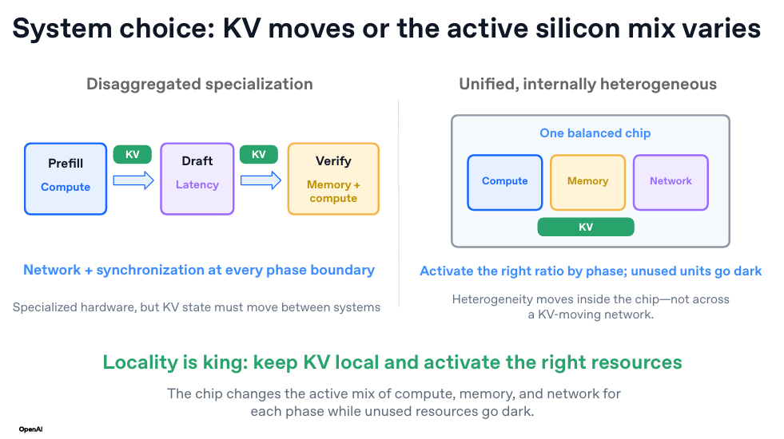
OpenAI想削减的是延迟，更准确地说是尾延迟，以此来提升用户体验。
在LLM推理中，数据主要通过all-reduce、reduce-scatter这类全局归约操作传输；这些操作跨多个处理器同步并行数据。尾延迟会在数百万次计算中造成「掉队者」效应：最坏的那个数据包拖住整个大计算，而其他数据包都按时到达了。
OpenAI指出了信号路径与软件层面上的几处延迟来源：网络延迟，即从A点到B点的信号路径因飞行时间与硬件复杂度带来的各种限制；内存系统，两件事影响内存延迟，一是HBM读写本身的固有延迟，通常在30到50纳秒之间，来自TSV堆叠中的信号传输、读取DRAM单元本身以及基die的复杂度，二是统一、聚合的内存系统往往有高度争用的路径，源于NoC路由、交叉开关交叉点与bank冲突。
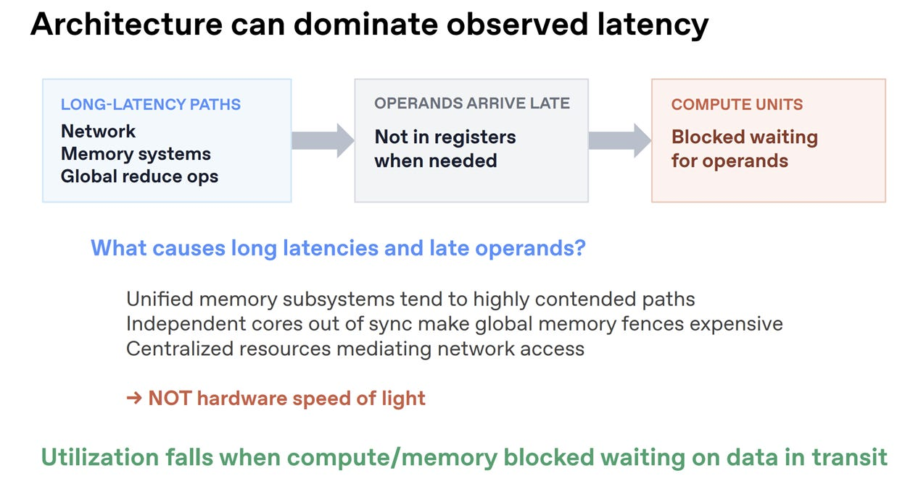
互连中的长延迟路径。一般来说，任何为了处理高速信号完整性非理想性而增加的电路复杂度都会带来延迟。信号穿过scale-up / scale-out网络互连时，每经过一个交换机都会增加延迟。上面给出的是截至2026年2月的一些SOTA参考值：可以看到飞行时间（OpenAI称之为「硬件光速」）相对于其他来源是很小的。
要最小化来自各类来源的延迟，有几件事可做。Nikola Nedovic在ISSCC 2026论坛「新兴低延迟光互连」上指出了几个方向：网络架构层，提高交换机radix以减少数据包经过的网络跳数；机架层，用大规模铜背板直接连接GPU，而不是走传统的PCIe控制器、重定时器与以太网 / InfiniBand交换机；组件层，优化会引入10到100纳秒固定延迟的FEC；芯片层，转向低延迟CPO链路，这是目前讨论最多、吸引大量投资的方向，NVIDIA正在用WDM在不提高数据率的前提下扩展吞吐，Marvell则在用GeSi调制器瞄准OMIB。
作者的观点是，OpenAI没有采用CPO，因为它还没有真正为实时部署做好准备，所以他们转向其他手段来优化当下的延迟。
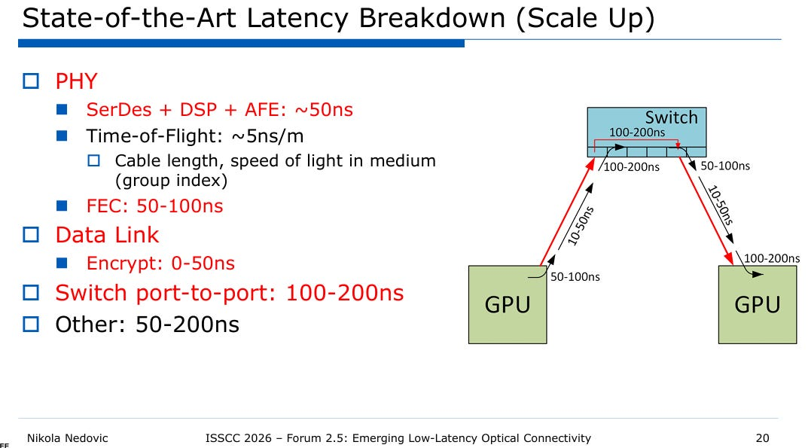
操作数迟到造成的计算停顿。上述物理来源在网络中累积的延迟，会让操作数晚于预期到达寄存器。在经典计算机体系结构的意义上，操作数迟到会导致「停顿」，因为PE阵列要求数据严格同步锁步；结果是计算单元空转，等待中间操作的结果。
延迟从上一节提到的所有物理效应中累积，也会从网络拥塞与争用中累积，例如两个数据包试图使用同一物理资源：从同一个内存bank或输出节点读写。这也是为什么很多人认为互连是扩展AI算力的关键瓶颈之一，无论从基础物理还是网络的角度看都是如此。
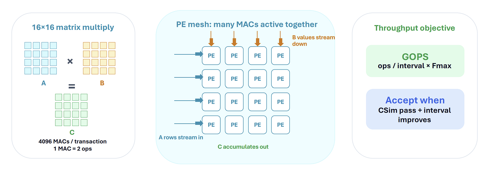
这些Pareto权衡与架构观察，最终影响了硬件系统架构。OpenAI使用了Broadcom的Tomahawk 6交换机，并请Celestica做机架级集成。
OpenAI使用一种「半扁平化」的有界两跳Clos拓扑，以获得可预测的延迟。这个网络架构的设计目标，是在处理张量并行与MoE并行之间取得平衡，同时让数据包最多只跳两跳。
Jalapeno与Broadcom现有的Tomahawk 6（TH6）协同设计，后者是世界上第一款102.4 Tbps的以太网交换芯片。它采用高radix架构，单颗die上最多支持512个200GbE端口（或128个800GbE端口、64个1.6TbE端口）。
在这里，交换机被组织并连接成两个域：scale-up / 本地域，一颗TH6以每颗800Gbps（4×200G）连接128颗Jalapeno，这个高带宽足以支撑张量并行；全局域，八颗TH6在scale-out域连接2048颗Jalapeno，确保可预测的延迟与足以支撑MoE并行的带宽。这套架构保证任意两颗Jalapeno之间最多经过本地与全局TH6两跳就能互通。
作者的观点是：他们本来或许可以在scale-up域用更好的交换机。Broadcom的Tomahawk 6是一台为scale-out设计的radix与带宽怪兽，用来减少网络总跳数，但由于硬件复杂度，它的延迟有600到700纳秒。Tomahawk Ultra有250纳秒的超低固定延迟，但总吞吐只有一半，即51.2Tbps。
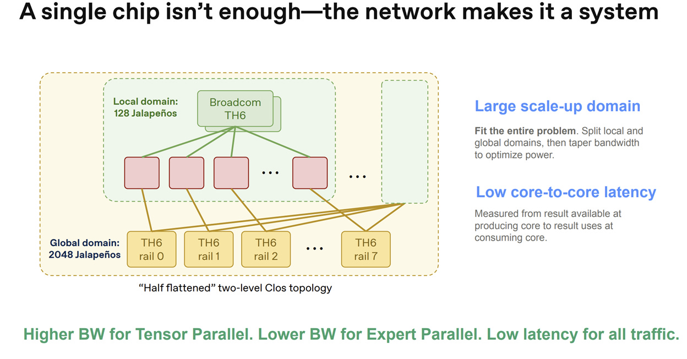
替代方案。他们可能考虑过的其他网络架构包括：
两层Fat-Tree。它使用两层spine与leaf交换机，保证跨机架的数据包经过3跳（leaf、spine、leaf）跨越两层交换机。NVIDIA GB200 InfiniBand SuperPOD参考架构就采用这种结构，可以用中等radix的交换实现极大的机架级扩展能力。OpenAI没有采用它，因为与两跳的高radix拓扑相比，3跳会增加尾延迟抖动与更高的功耗。
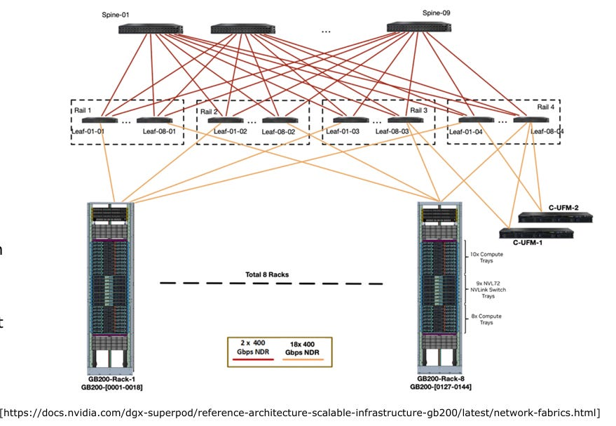
3D/4D直连Torus / Mesh网络。它在相邻计算节点之间使用直接的点对点链路，Google TPU 8t就采用这种结构，对张量并行这类静态、规整的数据移动模式很有成本效益。Jalapeno不用Torus，因为Torus的平均跳数偏高，会造成非常不可预测的链路延迟。
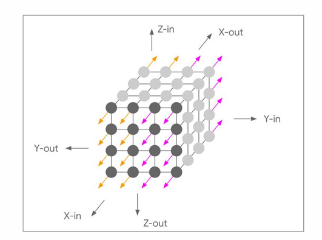
Dragonfly拓扑。在Dragonfly中，高radix交换机被组织成彼此密集连接的本地组，每个组如同一个「虚拟交换机」，各组之间再全连接到系统中的其他所有组。Google TPU8i采用这种结构，主要好处是节省光模块成本。Jalapeno不用Dragonfly，因为它引入了非均匀的全局路径；缓解拥塞需要UGAL这类非最小自适应路由，会增加数据包的不可预测性。
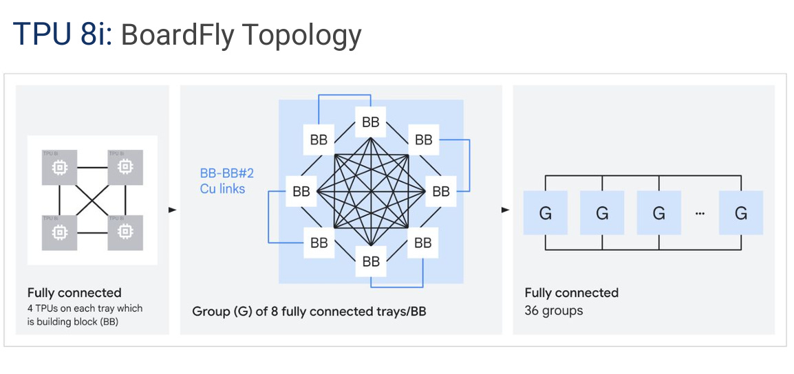
投机解码很像人类猜句子的下一个词。
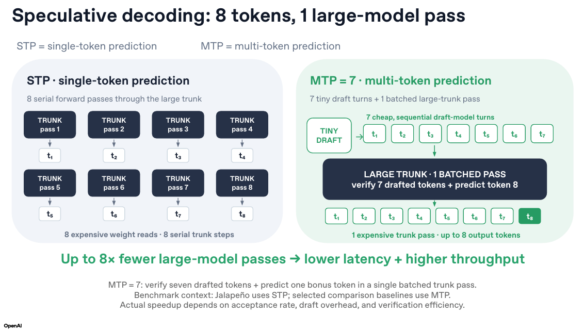
在常规prefill-decode流程的decode阶段，自回归生成是串行的：每个token都要逐步做一次完整前向与内存访问。这种「一次一个」的方式因为延迟更高、硬件利用率不足，限制了系统效率。
投机解码是一种优化技术，通过同时预测并验证多个token来突破内存墙。这里的「trunk」指典型transformer架构中的全部层，包含多头注意力、FF以及add/norm；输入经过这个trunk生成输出token。投机解码主要有两大类：
单token预测：8次前向产生8个不同的token。
多token预测：在廉价的图模型上做7次前向，再在大型模型上做1次前向。OpenAI选择了后者，以支撑用户体验、能效要求，并获得更高的token吞吐。
尽管Jalapeno的微架构是为支持多token预测从头设计的，OpenAI目前仍先跑单token预测工作负载来验证硅片。
标准GPU使用时间化的SIMT：庞大的warp调度器以锁步方式协调数千个线程的执行。
Jalapeno采用空间架构：独立的core slice被平铺排布，并配有专用的HBM接口；这些核连接到专门的集合通信结构，支持直接的核到核流式传输。每个核有自己的专用L1内存视图，独立运行本地tensor、SIMD、标量单元，不必等待中央warp控制器派发指令。
为了在保持空间可编程性的同时提供熟悉的SIMT接口，OpenAI设计了自研的kernel编程语言Gluon。Gluon构建在开源编译器Triton之上，但能提供更细粒度的硬件控制。它的设计目标是让软硬件协同设计者能用熟悉的GPU抽象（thread block）写代码，而不必手工构造空间数据流图。可以把它理解为一种「混合」方案：保留大多数人熟悉的时间化SIMT抽象，同时为本来极难编程的空间架构写代码。
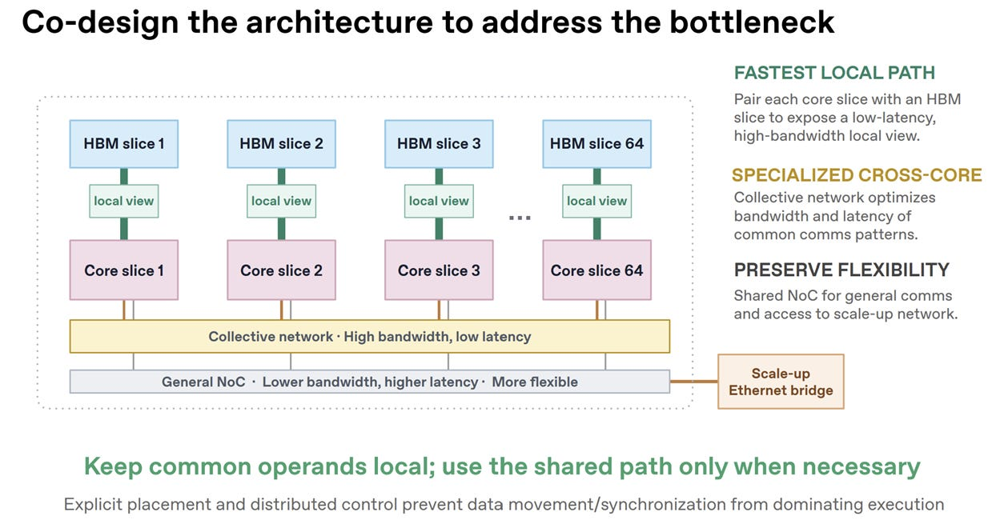
Jalapeno采用台积电3nm制程，以在端到端工作负载上最大化低精度推理的每瓦吞吐。它以一颗计算die搭配六个HBM4堆栈，每侧三个。内存系统总共提供15.4 TB/s与216 GiB。Jalapeno功耗700W，在fp4 / fp8矩阵乘法上达到3到13 PFLOPS/s。
作为对比：在NVIDIA功耗1000W以上的芯片上，B200提供9 PFLOPS/s、B300提供15 PFLOPS/s的fp4算力，但要记住Jalapeno只做推理。
由2048颗芯片组成的Jalapeno集群，是一个完整的pod / 数据中心整行，大约横跨28到32个机架。整个系统提供27 EFlops/s、32 PB/s与432 TiB。
值得注意的是，大部分与带宽相关的性能提升都可以归因于HBM4。
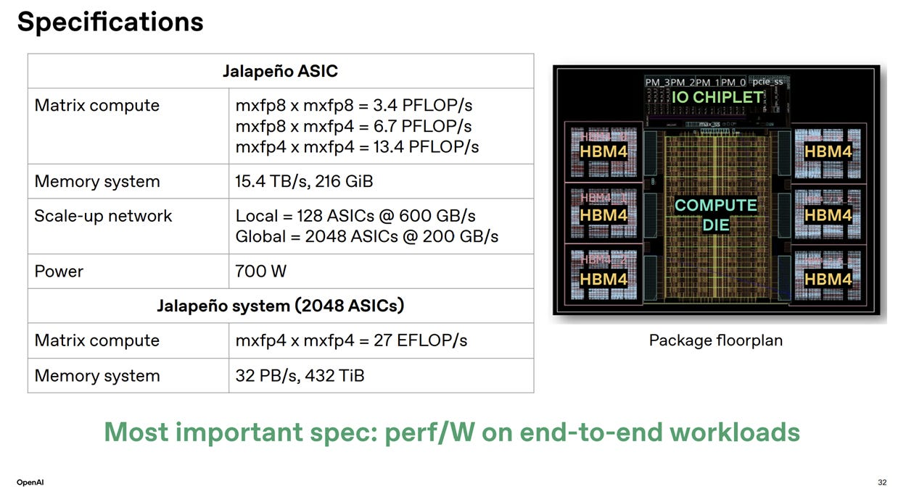
这一部分在原文中属于付费内容。公开页面能看到的部分是：OpenAI利用AI辅助的高级综合，配合Google XLS；作者接下来要解释它在「把AI应用于芯片设计的三种主要方法」中的位置。
以下小节的标题在原文目录里可见，但正文需要付费订阅才能阅读：三种辅助芯片设计的agentic编码范式；LLM到RTL的管线；LLM到高级综合（HLS）的管线；Agentic Flow；为什么agentic flow还没有进入先进芯片设计；Jalapeno如何用AI：基于Google XLS的高级综合；与「瀑布式」芯片设计方法论的对比。
第四部分同样是付费内容，内容包括软件性能调优以及在前沿模型上的结果。
写完这篇文章之后，作者在想一个问题：AI究竟应该被更好地用来增强当前「瀑布式」芯片设计方法论中的各个步骤，还是用来促成一套更迭代的方法论。在这次设计中，OpenAI借助开源工具Google XLS，用他们的前沿模型辅助了块级的PPA优化与形式验证。Google XLS对缩短时间线确有贡献，但作者认为，工作本身那种迭代的、跨域的（而且往往更混乱的）性质，或许是更重要的因素。
在Hot Chips之前，作者通过参加五个技术会议，从底层研究了数据中心的架构；本文中散布着他此前的若干深度分析，它们构成了这里讨论的各种跨域效应的基础。DAC之后，他写过一篇关于AI目前在芯片设计中如何被使用的深度文章，建议读者一读，另外还有一篇AI加速器基础入门。
一如既往，如果你是专家并发现本文有错误，请联系作者以便及时更正。
参考：https://www.siliconcodesign.com/p/an-advanced-system-architecture-breakdown